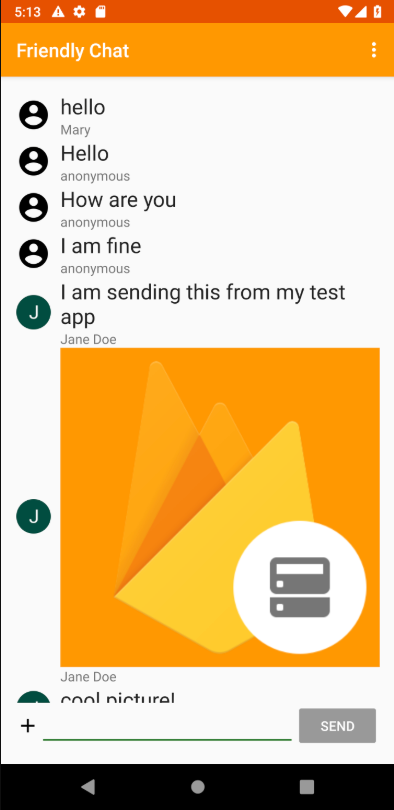

1. Overview

Image: Working Friendly Chat app.
Welcome to the Friendly Chat codelab. In this codelab, you'll learn how to use the Firebase platform to create a chat app on Android.
What you learn to do
- Allow users to sign in.
- Sync data using the Firebase Realtime Database.
- Store binary files in Firebase
What you need
- Android Studio version 3.4+.
- Sample code.
- A test device with Android 2.3+ and Google Play services 9.8 or later, or an Emulator with Google Play services 9.8 or later
- If using a device, a connection cable.
2. Get the sample code
Clone the GitHub repository from the command line:
$ git clone https://github.com/firebase/friendlychat-android
3. Import the starter app
From Android Studio, select the build-android-start directory ( ) from the sample code download (File > Open > .../friendlychat-android/build-android-start).
) from the sample code download (File > Open > .../friendlychat-android/build-android-start).
You should now have the android-start project open in Android Studio. If you see a warning about a google-services.json file missing, don't worry. It will be added in the next step.
4. Create Firebase console project
Add Firebase to the project
- Go to the Firebase console.
- Select Add project.
- Select or enter a Project name.
- Follow the remaining setup steps in the Firebase console, then click Create project (or Add Firebase, if you're using an existing Google project).
5. Add Firebase
- From the overview screen of your new project, click the Android icon to launch the setup workflow.
- Enter the codelab's package name:
com.google.firebase.codelab.friendlychat - Enter the SHA1 of your signing keystore. If you are using the standard debug keystore, use the command below to find the SHA1 hash:
keytool -alias androiddebugkey -keystore ~/.android/debug.keystore -list -v -storepass android
Add google-services.json file to your app
After adding the package name and SHA1 and selecting Register, Click Download google-services.json to obtain your Firebase Android config file then copy the google-services.json file into the app directory in your project. After the file is downloaded you can Skip the next steps shown in the console (they've already been done for you in the build-android-start project).
Add google-services plugin to your app
The google-services plugin uses the google-services.json file to
configure your application to use Firebase. The following line should
already be added to the end of the build.gradle file in the app directory of your project (check to confirm):
apply plugin: 'com.google.gms.google-services'Sync your project with gradle files
To be sure that all dependencies are available to your app, you should sync your project with gradle files at this point. Select File > Sync Project with Gradle Files from the Android Studio toolbar.
6. Run the starter app
Now that you have imported the project into Android Studio and configured the google-services plugin with your JSON file, you are ready to run the app for the first time. Connect your Android device, and click Run ( )in the Android Studio toolbar.
)in the Android Studio toolbar.
The app should launch on your device. At this point, you should see an empty message list, and sending and receiving messages will not work. In the next section, you authenticate users so they can use Friendly Chat.
7. Enable Authentication
Let's require a user to sign in before reading or posting any Friendly Chat messages.
Firebase Realtime Database Rules
Access to your Firebase Database is configured by a set of rules written in a JSON configuration language.
Go to your project in the Firebase console and select Database. Select the Realtime Database option (not Cloud Firestore). If prompted for security rules, with choices to start in either test mode or locked mode, choose locked mode. Once the default rules are established, select the Rules tab and update the rules configuration with the following:
{
"rules": {
".read": "auth != null",
".write": "auth != null"
}
}Click "Publish" to publish the new rules.
For more information on how this works (including documentation on the "auth" variable) see the Firebase security documentation.
Configure Authentication APIs
Before your application can access the Firebase Authentication APIs on behalf of your users, you will have to enable it
- Navigate to the Firebase console and select your project
- Select Authentication
- Select the Sign In Method tab
- Toggle the Google switch to enabled (blue)
- Set a support email.
- Press Save on the resulting dialog
If you get errors later in this codelab with the message "CONFIGURATION_NOT_FOUND", come back to this step and double check your work.
Add Firebase Auth dependency
The firebase-auth SDK allows easy management of authenticated users
of your application. Confirm the existence of this dependency in your app/build.gradle file.
app/build.gradle
implementation 'com.google.firebase:firebase-auth'Add the Auth instance variables in the MainActivity class under the // Firebase instance variables comment:
MainActivity.java (instance variable)
// Firebase instance variables
private FirebaseAuth mFirebaseAuth;
private FirebaseUser mFirebaseUser;Check for current user
Now let's modify MainActivity.java to send the user to the sign-in screen whenever they open the app and are unauthenticated.
Add the following to the onCreate method after mUsername has been initialized:
MainActivity.java
// Initialize Firebase Auth
mFirebaseAuth = FirebaseAuth.getInstance();
mFirebaseUser = mFirebaseAuth.getCurrentUser();
if (mFirebaseUser == null) {
// Not signed in, launch the Sign In activity
startActivity(new Intent(this, SignInActivity.class));
finish();
return;
} else {
mUsername = mFirebaseUser.getDisplayName();
if (mFirebaseUser.getPhotoUrl() != null) {
mPhotoUrl = mFirebaseUser.getPhotoUrl().toString();
}
}Then add a new case to onOptionsItemSelected() to handle the sign out button:
MainActivity.java
@Override
public boolean onOptionsItemSelected(MenuItem item) {
switch (item.getItemId()) {
case R.id.sign_out_menu:
mFirebaseAuth.signOut();
Auth.GoogleSignInApi.signOut(mGoogleApiClient);
mUsername = ANONYMOUS;
startActivity(new Intent(this, SignInActivity.class));
finish();
return true;
default:
return super.onOptionsItemSelected(item);
}
}Now we have all of the logic in place to send the user to the sign-in screen when necessary. Next we need to implement the sign-in screen to properly authenticate users.
Implement the Sign-In screen
Open the file SignInActivity.java. Here a simple
Sign-In button is used to initiate authentication. In this step you will
implement the logic to Sign-In with Google, and then use that Google
account to authenticate with Firebase.
Add an Auth instance variable in the SignInActivity class under the // Firebase instance variables comment:
SignInActivity.java
// Firebase instance variables
private FirebaseAuth mFirebaseAuth;Then, edit the onCreate() method to initialize Firebase in the same way you did in MainActivity:
SignInActivity.java
// Initialize FirebaseAuth
mFirebaseAuth = FirebaseAuth.getInstance();Next, initiate signing in with Google. Update SignInActivity's onClick method to look like this:
SignInActivity.java
@Override
public void onClick(View v) {
switch (v.getId()) {
case R.id.sign_in_button:
signIn();
break;
}
}Add the required signIn method that actually presents the user with the Google Sign-In UI.
SignInActivity.java
private void signIn() {
Intent signInIntent = Auth.GoogleSignInApi.getSignInIntent(mGoogleApiClient);
startActivityForResult(signInIntent, RC_SIGN_IN);
}Next, add the onActivityResult method to SignInActivity
to handle the sign in result. If the result of the Google Sign-In was
successful, use the account to authenticate with Firebase.
SignInActivity.java
@Override
public void onActivityResult(int requestCode, int resultCode, Intent data) {
super.onActivityResult(requestCode, resultCode, data);
// Result returned from launching the Intent from GoogleSignInApi.getSignInIntent(...);
if (requestCode == RC_SIGN_IN) {
GoogleSignInResult result = Auth.GoogleSignInApi.getSignInResultFromIntent(data);
if (result.isSuccess()) {
// Google Sign-In was successful, authenticate with Firebase
GoogleSignInAccount account = result.getSignInAccount();
firebaseAuthWithGoogle(account);
} else {
// Google Sign-In failed
Log.e(TAG, "Google Sign-In failed.");
}
}
}
Add the required firebaseAuthWithGoogle method to authenticate with the signed in Google account:
SignInActivity.java
private void firebaseAuthWithGoogle(GoogleSignInAccount acct) {
Log.d(TAG, "firebaseAuthWithGooogle:" + acct.getId());
AuthCredential credential = GoogleAuthProvider.getCredential(acct.getIdToken(), null);
mFirebaseAuth.signInWithCredential(credential)
.addOnCompleteListener(this, new OnCompleteListener<AuthResult>() {
@Override
public void onComplete(@NonNull Task<AuthResult> task) {
Log.d(TAG, "signInWithCredential:onComplete:" + task.isSuccessful());
// If sign in fails, display a message to the user. If sign in succeeds
// the auth state listener will be notified and logic to handle the
// signed in user can be handled in the listener.
if (!task.isSuccessful()) {
Log.w(TAG, "signInWithCredential", task.getException());
Toast.makeText(SignInActivity.this, "Authentication failed.",
Toast.LENGTH_SHORT).show();
} else {
startActivity(new Intent(SignInActivity.this, MainActivity.class));
finish();
}
}
});
}That's it! You've implemented authentication using Google as an Identity Provider in just a few method calls and without needing to manage any server-side configuration.
Test your work
Run the app on your device. You should be immediately sent to the sign-in screen. Tap the Google Sign-In button. You should then be sent to the messaging screen if everything worked well.
8. Read Messages
Import Messages
- In your project in Firebase console, select Database on the left navigation menu.
- Select Realtime Database option.
- In the overflow menu of the Data tab, select Import JSON.
- Browse to the initial_messages.json file in the root of the cloned repository, and select it.
- Click Import.
After importing the JSON file, your database should look like this:
root
messages
-K2ib4H77rj0LYewF7dP
text: "hello"
name: "anonymous"
-K2ib5JHRbbL0NrztUfO
text: "how are you"
name: "anonymous"
-K2ib62mjHh34CAUbide
text: "i am fine"
name: "anonymous"Add Firebase Realtime Database and Firebase Storage dependencies
In the dependencies block of the app/build.gradle file, the following dependencies should be included. For this codelab, they are already added for convenience; confirm this by looking in the app/build.gradle file:
Dependency in app/build.gradle
implementation 'com.google.firebase:firebase-database'
implementation 'com.google.firebase:firebase-storage'Synchronize messages
In this section we add code that synchronizes newly added messages to the app UI by:
- Initializing the Firebase Realtime Database and adding a listener to handle changes made to the data.
- Updating the
RecyclerViewadapter so new messages will be shown. - Adding the Database instance variables with your other Firebase instance variables in the
MainActivityclass:
MainActivity.java
// Firebase instance variables
...
private DatabaseReference mFirebaseDatabaseReference;
private FirebaseRecyclerAdapter<FriendlyMessage, MessageViewHolder>
mFirebaseAdapter;Modify your MainActivity's onCreate method by replacing mProgressBar.setVisibility(ProgressBar.INVISIBLE); with
the code defined below. This code initially adds all existing messages
and then listens for new child entries under the messages path in your
Firebase Realtime Database. It adds a new element to the UI for each
message:
MainActivity.java
// New child entries
mFirebaseDatabaseReference = FirebaseDatabase.getInstance().getReference();
SnapshotParser<FriendlyMessage> parser = new SnapshotParser<FriendlyMessage>() {
@Override
public FriendlyMessage parseSnapshot(DataSnapshot dataSnapshot) {
FriendlyMessage friendlyMessage = dataSnapshot.getValue(FriendlyMessage.class);
if (friendlyMessage != null) {
friendlyMessage.setId(dataSnapshot.getKey());
}
return friendlyMessage;
}
};
DatabaseReference messagesRef = mFirebaseDatabaseReference.child(MESSAGES_CHILD);
FirebaseRecyclerOptions<FriendlyMessage> options =
new FirebaseRecyclerOptions.Builder<FriendlyMessage>()
.setQuery(messagesRef, parser)
.build();
mFirebaseAdapter = new FirebaseRecyclerAdapter<FriendlyMessage, MessageViewHolder>(options) {
@Override
public MessageViewHolder onCreateViewHolder(ViewGroup viewGroup, int i) {
LayoutInflater inflater = LayoutInflater.from(viewGroup.getContext());
return new MessageViewHolder(inflater.inflate(R.layout.item_message, viewGroup, false));
}
@Override
protected void onBindViewHolder(final MessageViewHolder viewHolder,
int position,
FriendlyMessage friendlyMessage) {
mProgressBar.setVisibility(ProgressBar.INVISIBLE);
if (friendlyMessage.getText() != null) {
viewHolder.messageTextView.setText(friendlyMessage.getText());
viewHolder.messageTextView.setVisibility(TextView.VISIBLE);
viewHolder.messageImageView.setVisibility(ImageView.GONE);
} else if (friendlyMessage.getImageUrl() != null) {
String imageUrl = friendlyMessage.getImageUrl();
if (imageUrl.startsWith("gs://")) {
StorageReference storageReference = FirebaseStorage.getInstance()
.getReferenceFromUrl(imageUrl);
storageReference.getDownloadUrl().addOnCompleteListener(
new OnCompleteListener<Uri>() {
@Override
public void onComplete(@NonNull Task<Uri> task) {
if (task.isSuccessful()) {
String downloadUrl = task.getResult().toString();
Glide.with(viewHolder.messageImageView.getContext())
.load(downloadUrl)
.into(viewHolder.messageImageView);
} else {
Log.w(TAG, "Getting download url was not successful.",
task.getException());
}
}
});
} else {
Glide.with(viewHolder.messageImageView.getContext())
.load(friendlyMessage.getImageUrl())
.into(viewHolder.messageImageView);
}
viewHolder.messageImageView.setVisibility(ImageView.VISIBLE);
viewHolder.messageTextView.setVisibility(TextView.GONE);
}
viewHolder.messengerTextView.setText(friendlyMessage.getName());
if (friendlyMessage.getPhotoUrl() == null) {
viewHolder.messengerImageView.setImageDrawable(ContextCompat.getDrawable(MainActivity.this,
R.drawable.ic_account_circle_black_36dp));
} else {
Glide.with(MainActivity.this)
.load(friendlyMessage.getPhotoUrl())
.into(viewHolder.messengerImageView);
}
}
};
mFirebaseAdapter.registerAdapterDataObserver(new RecyclerView.AdapterDataObserver() {
@Override
public void onItemRangeInserted(int positionStart, int itemCount) {
super.onItemRangeInserted(positionStart, itemCount);
int friendlyMessageCount = mFirebaseAdapter.getItemCount();
int lastVisiblePosition =
mLinearLayoutManager.findLastCompletelyVisibleItemPosition();
// If the recycler view is initially being loaded or the
// user is at the bottom of the list, scroll to the bottom
// of the list to show the newly added message.
if (lastVisiblePosition == -1 ||
(positionStart >= (friendlyMessageCount - 1) &&
lastVisiblePosition == (positionStart - 1))) {
mMessageRecyclerView.scrollToPosition(positionStart);
}
}
});
mMessageRecyclerView.setAdapter(mFirebaseAdapter);Appropriately start and stop listening for updates from Firebase Realtime Database. Update the onPause and onResume methods in MainActivity as shown below.
MainActivity.java
@Override
public void onPause() {
mFirebaseAdapter.stopListening();
super.onPause();
}
@Override
public void onResume() {
super.onResume();
mFirebaseAdapter.startListening();
}Test message sync
- Click Run ().
- Add new messages directly in the Database section of the Firebase console. Confirm that they show up in the Friendly-Chat UI.
- Navigate to the Database section of the Firebase console. From the Data tab, select the '+' sign on the messages element.
- Give the new element a name of -ABCD (note the '-' sign) and leave the value empty for now.
- Select the '+' sign on the -ABCD element
- Give the new element a name of "name" and value of "Mary"
- Select the '+' sign on the -ABCD element again
- Give the new element a name of "text" and value of "hello"
- Select Add
Congratulations, you just added a realtime database to your app!
9. Send Messages
Implement text message sending
In this section, you will add the ability for app users to send text
messages. The code snippet below listens for click events on the send
button, creates a new FriendlyMessage object with the contents of the message field, and pushes the message to the database. The push()
method adds an automatically generated ID to the pushed object's path.
These IDs are sequential which ensures that the new messages will be
added to the end of the list.
Update the onClick method of mSendButton in the onCreate method in the MainActivity class. This code is at the bottom of the onCreate method already. Update the onClick body to match the code below:
MainActivity.java
mSendButton = (Button) findViewById(R.id.sendButton);
mSendButton.setOnClickListener(new View.OnClickListener() {
@Override
public void onClick(View view) {
FriendlyMessage friendlyMessage = new
FriendlyMessage(mMessageEditText.getText().toString(),
mUsername,
mPhotoUrl,
null /* no image */);
mFirebaseDatabaseReference.child(MESSAGES_CHILD)
.push().setValue(friendlyMessage);
mMessageEditText.setText("");
}
});Implement image message sending
In this section, you will add the ability for app users to send image messages. Creating an image message is done with these steps:
- Select image
- Handle image selection
- Write temporary image message to the RTDB (Realtime Database)
- Begin to upload selected image
- Update image message URL to that of the uploaded image, once upload is complete
Select Image
To add images this codelab uses Cloud Storage for Firebase. Cloud Storage is a good place to store the binary data of your app.
In the Firebase console select Storage in the left navigation panel. Then click Get Started to enable Cloud Storage for your project. Continue following the steps in the prompt, using the suggested defaults.
With the following code snippet you will allow the user to select an image from the device's local storage. Update the onClick method of mAddMessageImageView in the onCreate method in the MainActivity class. This code is at the bottom of the onCreate method already. Update the onClick body to match the code below:
MainActivity.java
mAddMessageImageView = (ImageView) findViewById(R.id.addMessageImageView);
mAddMessageImageView.setOnClickListener(new View.OnClickListener() {
@Override
public void onClick(View view) {
Intent intent = new Intent(Intent.ACTION_OPEN_DOCUMENT);
intent.addCategory(Intent.CATEGORY_OPENABLE);
intent.setType("image/*");
startActivityForResult(intent, REQUEST_IMAGE);
}
});Handle image selection and write temp message
Once the user has selected an image, a call to the MainActivity's onActivityResult will be fired. This is where you handle the user's image selection. Using the code snippet below, add the onActivityResult method to MainActivity. In this function you will write a message with a temporary image url to the database indicating the image is being uploaded.
MainActivity.java
@Override
protected void onActivityResult(int requestCode, int resultCode, Intent data) {
super.onActivityResult(requestCode, resultCode, data);
Log.d(TAG, "onActivityResult: requestCode=" + requestCode + ", resultCode=" + resultCode);
if (requestCode == REQUEST_IMAGE) {
if (resultCode == RESULT_OK) {
if (data != null) {
final Uri uri = data.getData();
Log.d(TAG, "Uri: " + uri.toString());
FriendlyMessage tempMessage = new FriendlyMessage(null, mUsername, mPhotoUrl,
LOADING_IMAGE_URL);
mFirebaseDatabaseReference.child(MESSAGES_CHILD).push()
.setValue(tempMessage, new DatabaseReference.CompletionListener() {
@Override
public void onComplete(DatabaseError databaseError,
DatabaseReference databaseReference) {
if (databaseError == null) {
String key = databaseReference.getKey();
StorageReference storageReference =
FirebaseStorage.getInstance()
.getReference(mFirebaseUser.getUid())
.child(key)
.child(uri.getLastPathSegment());
putImageInStorage(storageReference, uri, key);
} else {
Log.w(TAG, "Unable to write message to database.",
databaseError.toException());
}
}
});
}
}
}
}Upload image and update message
Add the method putImageInStorage to MainActivity. It is called in onActivityResult
to initiate the upload of the selected image. Once the upload is
complete you will update the message to use the appropriate image.
MainActivity.java
private void putImageInStorage(StorageReference storageReference, Uri uri, final String key) {
storageReference.putFile(uri).addOnCompleteListener(MainActivity.this,
new OnCompleteListener<UploadTask.TaskSnapshot>() {
@Override
public void onComplete(@NonNull Task<UploadTask.TaskSnapshot> task) {
if (task.isSuccessful()) {
task.getResult().getMetadata().getReference().getDownloadUrl()
.addOnCompleteListener(MainActivity.this,
new OnCompleteListener<Uri>() {
@Override
public void onComplete(@NonNull Task<Uri> task) {
if (task.isSuccessful()) {
FriendlyMessage friendlyMessage =
new FriendlyMessage(null, mUsername, mPhotoUrl,
task.getResult().toString());
mFirebaseDatabaseReference.child(MESSAGES_CHILD).child(key)
.setValue(friendlyMessage);
}
}
});
} else {
Log.w(TAG, "Image upload task was not successful.",
task.getException());
}
}
});
}Test Sending Messages
- Click the Run button.
- Enter a message and hit the send button, the new message should be visible in the app UI and in the Firebase console.
- Tap the "+" image to select an image from your device. The new message should be visible first with a placeholder image, and then with the selected image once the image upload is complete. The new message should also be visible in the Firebase console, as an object in the Database and as a blob in Storage.
10. Congratulations!
You have used Firebase to easily build a real-time chat application.
What we've covered
- Firebase Authentication
- Firebase Realtime Database
- Cloud Storage for Firebase
Next Steps
- Try the Grow Friendly Chat codelab, to learn how to grow the app you just built.
- Use Firebase in your own Android app.